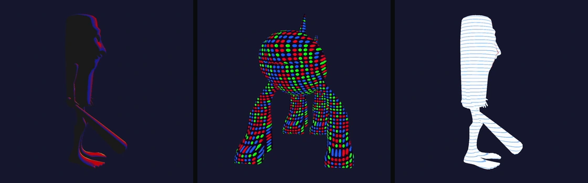
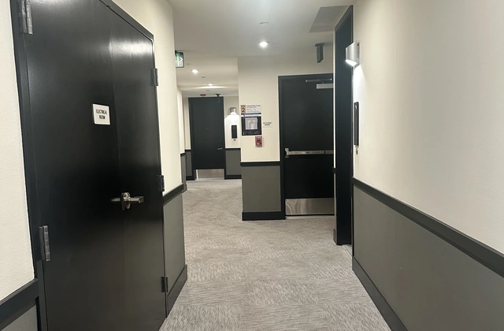
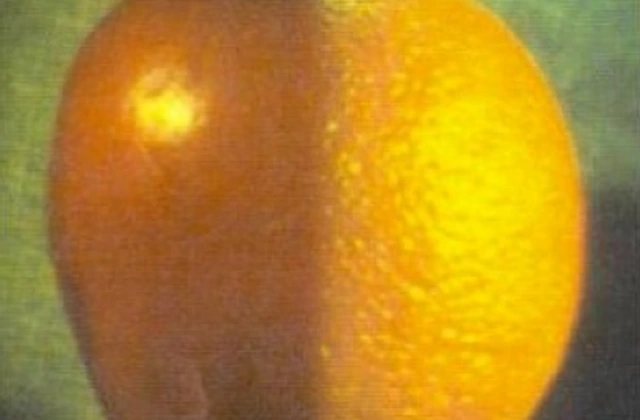
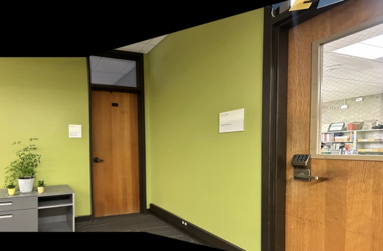
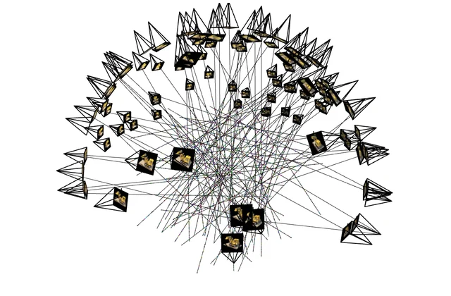
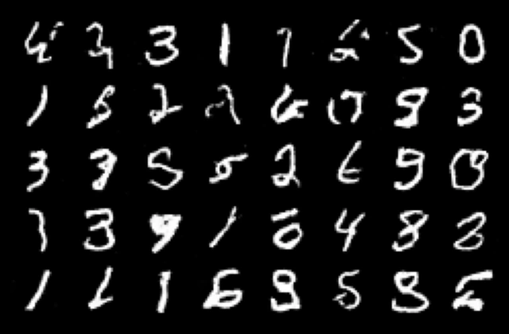

Crux Motion
Camera-controlled 2D bouldering game with Jug/Crimp/Pinch grip recognition, forearm pump, and 12 routes.
ZIXUN WANG · UC BERKELEY CS & STATISTICS
Physics-driven browser games, WebGL 2 optical sandboxes, OpenGL shaders, and statistical imaging tools.
01 / FEATURED WORK
Live browser builds, research companion, and public source repositories.
Camera-controlled 2D bouldering game with Jug/Crimp/Pinch grip recognition, forearm pump, and 12 routes.
Physical 3D projection darkroom (Room 04) with thin-lens bokeh, volumetric light shafts, mirror bounces, and prism dispersion.
Interactive companion to Do Generalized-Gamma Scale Mixtures of Normals Fit Large Image Datasets? (Marks, Dave, Wang et al.).
Eight quick judgment calls on everyday edge cases, contradiction cross-examination, and printable call receipts.
02 / GRAPHICS & COMPUTER VISION
Real-time OpenGL/GLSL shaders and six UC Berkeley CS 180 vision studies.

Custom C++/OpenGL/GLSL shaders (toon quantization, thermal ramp, halftone stipple, chroma dispersion, notebook lines).

Focal length distortion, portrait perspective compression, and dolly zoom.
Multiscale image pyramid alignment across RGB glass plate channels.

From-scratch convolution, unsharp masking, hybrid images, and spline blending.

Homographies, inverse warping, Harris/ANMS features, and auto-stitched panoramas.

ArUco calibration, 2D neural fields, and volumetric multi-view NeRF.

DeepFloyd IF editing, visual anagrams, and MNIST UNet flow matching.
03 / COMPLETE INDEX
Direct links to live deployments, write-ups, papers, and verified public GitHub repositories.
| Project | Stack & Focus | Domain | Links |
|---|---|---|---|
| Crux Motion Camera-controlled 2D bouldering (12 routes) | TypeScript, 120 Hz Canvas, MediaPipe | Interactive Game | Play Live ↗ Launchpad ↗ GitHub ↗ |
| Slide Projector (Room 04) Physical 3D darkroom & optics sandbox | TypeScript, Three.js WebGL 2, Rapier, GLSL | 3D Graphics | Enter Room 04 ↗ |
| The Shape of an Image 8-lab companion to arXiv:2512.17038 | JavaScript ES Modules, Quadrature, Wavelets | Research | Companion ↗ arXiv ↗ PDF ↗ GitHub ↗ |
| Crux 24-route climbing puzzle with Realism fatigue | TypeScript, Planck.js | Physics Puzzle | Play Live ↗ GitHub ↗ |
| Still Counts? Edge-case judgment game & printable receipts | Vanilla JS, Web Audio, Canvas | Browser Game | Play Live ↗ Sandwiches Dates Work Source ↗ |
| CS 184 · Non-Photorealistic Rendering Interactive 3D stylized OBJ shader testbed | C++, OpenGL, GLSL, GLFW, GLM | Graphics | Report ↗ GitHub ↗ Demo ↗ Slides ↗ |
| CS 180 · Computer Vision & Diffusion Six project write-ups (Optics to Flow Matching) | Python, NumPy, PyTorch, Diffusion | Vision | 00 01 02 03 04 05 |
| Voice Rizz Voice analysis experiment | Audio Signal Analysis | Repository | GitHub ↗ |